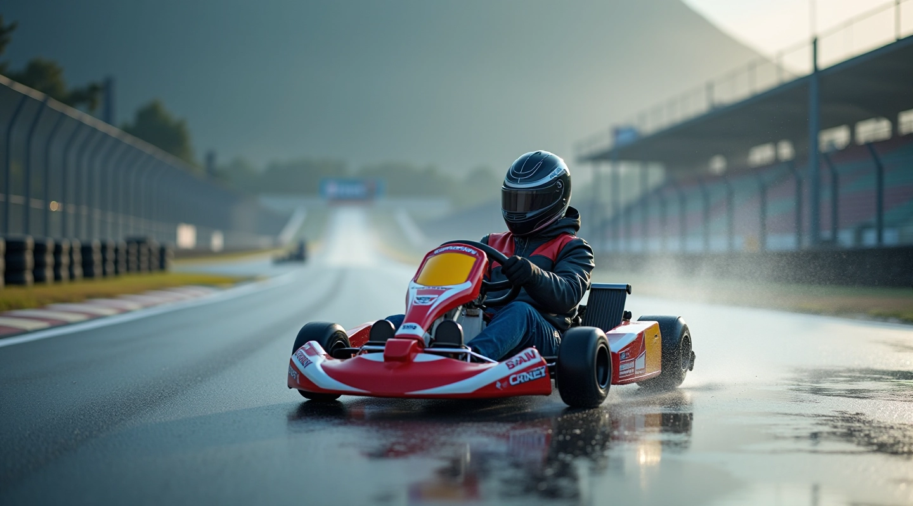
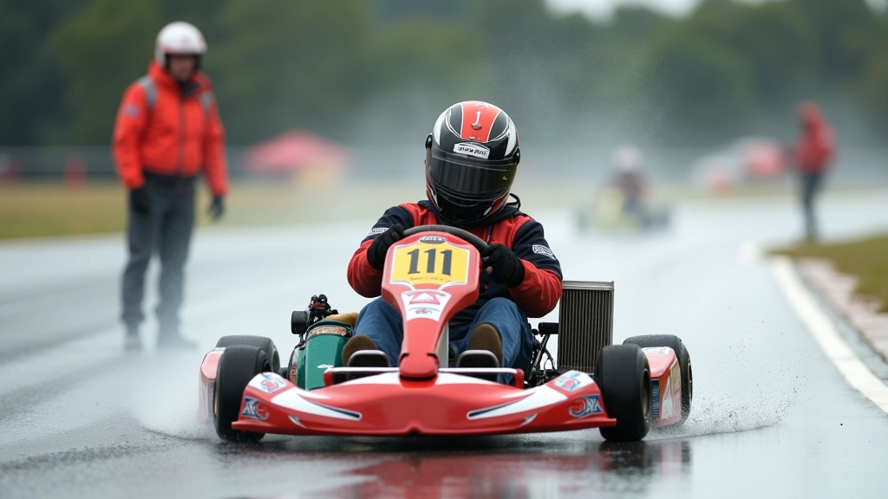
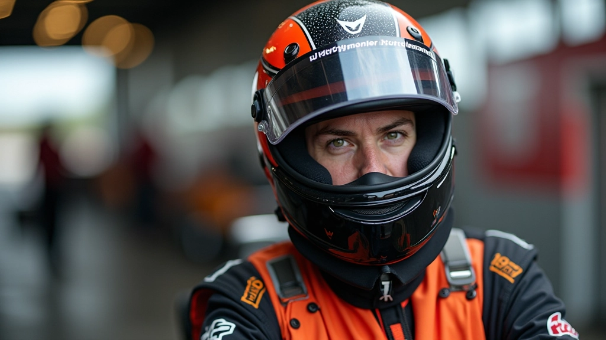

تقنيات القيادة على المسار المبلل
نحن متخصصون في تعليم السائقين الشباب مهارات القيادة المتقدمة على الأسطح الرطبة. مضمار السرعة للتدريب Ltd يوفر تدريباً عملياً يركز على الأمان والأداء والثقة في ظروف قيادية صعبة.

كيف نقترب من التدريب
الكارتينج على المسار المبلل ليس عن الجرأة فحسب — إنه عن الفهم. نحن نعتقد أن كل سائق يمكنه التعلم والتطور عندما يكون لديه المعرفة الصحيحة والتوجيه الشخصي.
الأساسيات أولاً
نبدأ بالتحكم الأساسي والتعامل مع السيارة. التقنية السليمة تبني الثقة. لا نستعجل إلى الحركات المتقدمة حتى يكون السائق مستعداً تماماً.
التطبيق العملي
الدروس تأتي على المسار. ترى كيف تعمل التقنيات فعلياً. تحصل على تغذية راجعة فورية من المدربين الذين يقودون أيضاً.
التطور التدريجي
كل سائق يتقدم بسرعته الخاصة. نراقب التقدم ونعدل البرنامج حسب احتياجات كل فرد. الهدف هو التحسن المستمر والآمن.
مجالات التخصص
نركز على جوانب محددة من القيادة على الأسطح الرطبة التي تحدث فرقاً حقيقياً في الأداء والسلامة.
التحكم والتعامل
تعلم كيفية التعامل مع السيارة عندما تفقد الجر. نغطي التصحيحات، توازن الضغط، وموضع الجسم الصحيح لكل حالة.
اختيار وصيانة الإطارات
الإطارات المناسبة تغير كل شيء على المسار الرطب. نعلم كيفية اختيار الإطارات وصيانتها والعناية بها للحصول على أفضل أداء.
تقنيات الخط والسرعة
اختيار الخط الصحيح في المنعطفات الرطبة. نركز على نقاط الدخول والخروج والسرعة الآمنة والفعالة.
بناء الثقة التدريجية
نعلم السائقين كيفية توسيع حدودهم بأمان. بدء ببطء، ممارسة متكررة، زيادة السرعة تدريجياً عندما تكون مستعداً.
كيف نبني الكفاءة
برنامجنا منظم حول بناء مهارات حقيقية خطوة بخطوة. لا توجد اختصارات. فقط تقدم متسق وآمن.
المرحلة الأولى: الأساسيات
نبدأ بالفهم. كيف تعمل الفيزياء على الأسطح الرطبة؟ ما هي الأخطاء الشائعة؟ نقضي الوقت على التقنية الأساسية حتى تصبح طبيعية.
المرحلة الثانية: الممارسة المنظمة
حان وقت التطبيق. نقوم بتمارين محددة على المسار تركز على جزء واحد في كل مرة. الاستقرار، المنعطفات، التسارع — كل واحد بمفرده أولاً.
المرحلة الثالثة: الجمع والسرعة
الآن نجمع المهارات معاً. نزيد السرعة تدريجياً. تتعلم قراءة المسار والاستجابة بسرعة. التركيز على الاتساق والسلامة.
المرحلة الرابعة: التطور المستمر
التدريب لا ينتهي. نحن نراقب الأداء، نحدد المجالات للتحسين، نعدل البرنامج. السائقون الجيدون يتعلمون باستمرار ويتكيفون.

ما الذي يميز مضمار السرعة للتدريب Ltd
مضمار السرعة للتدريب Ltd بدأت لأن هناك حاجة حقيقية. الشباب يريدون تعلم القيادة بشكل صحيح على الأسطح الرطبة، لكن المعلومات والتدريب الجيد نادر.
نحن نركز على الوضوح. شرح لماذا تحدث الأشياء، ليس فقط ماذا تفعل. تدريب عملي حقيقي على المسار. تغذية راجعة شخصية من مدربين متمرسين.
النتيجة؟ سائقون أكثر ثقة وأماناً وقدرة على القيادة على الأسطح الرطبة. هذا ما نقدمه.

معلومات مهمة
المعلومات المقدمة على هذا الموقع مخصصة للأغراض التعليمية والمعلوماتية فقط. قيادة الكارتينج، خاصة على الأسطح الرطبة، تتضمن مخاطر كامنة. النتائج الفردية تختلف بناءً على الخبرة السابقة والقدرات البدنية والالتزام بالتدريب. نشجع جميع المشاركين على الامتثال الكامل لتعليمات السلامة وارتداء معدات الحماية المناسبة والتشاور مع مدربين مؤهلين قبل المشاركة في أي أنشطة سباق.